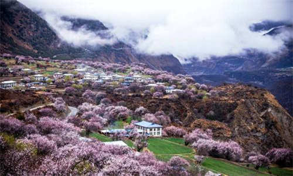

morly旅游网
林芝桃花沟之所以出名，就因为其有一片天然的野生桃林，这样的景象在藏区是很难看到的。桃花盛开在每年的3月，此时寒意未尽，娇嫩的桃花在皑皑雪山下却显得格外的柔媚。与别的地方不同，这里的桃树高大粗壮，气势上能与梧桐树一比。即使是桃树，身在藏区的树木也不忘展示它们的粗犷。不过，桃花却是比较小的，只不过密度集中，一眼望去真有成千上万的感觉。
每年的三月，就是林芝桃花节，这个活动至今已经有很多年的历史。冬天还未卸去银装，这里已然是花的海洋。那粉嫩的桃花如同姑娘脸色动人的高原红，成千上万，各展其枝。桃花沟三面环山，溪水倾泻而下，岸边野桃勃勃。不远处的尼洋河溪畔，桃林与麦田交相呼应。要观赏如此美景，最好的起始点是从桃花村开始，经桃花沟，东琼村。途中，桃花、油菜花还有皑皑雪山交相辉映，让人心醉其中。在这当中值得一提的是罗马村，被誉为最美桃花村，吸引着大量游客。
桃树
林芝桃树桃花与江南碧桃的风格大不相同。 那么多的老树，生命力却十分地旺盛。 树高花繁，开得狂野。学名叫“光核桃”，又名“西藏桃”，俗称“野桃”，藏语发音是“康布”。 光核桃树体高大，寿命可达千余年。耐旱、耐瘠、抗病、长寿、结果力强。果实富含VC、糖分和其它营养成分，可制作果脯、果汁等，并有独特的香味。
林芝桃花节
林芝地区号称西藏江南，桃花文化旅游节一年一度，是林芝地区发展旅游的一张大名片。始于2002年，随着历届的成功举办，2017迎来桃花节的第16个年头。 林芝地区的桃花异于江南碧桃的风格，学名叫“光核桃”，又名“西藏桃”，俗称“野桃”，树高花繁，开得狂野。光核桃树体高大，寿命可达千余年。 林芝地区的桃花是高原桃花，很多地方山脚桃花盛开，山上则是雪峰，独有风味。
林芝桃花各县都有，一般是在巴宜区嘎拉村开幕，北游工布江达县，南游米林县和波密县，其中，波密县波堆藏布流经的倾多镇—许木乡的桃花沟绵延30公里，号称中国最长的桃花沟。 2014年林芝桃花节于3月26日在巴宜区嘎拉村拉开帷幕，桃花节以桃花为媒，意将林芝营造为浪漫爱情目的地！林芝桃花节继续以“相约林芝，寻访美丽中国最美春天”为主题，诚邀各地游客到林芝赏桃花，品味林芝独特的文化和秀丽自然的风光。
节日简介
每年那时候，西藏的冬天还未退去银妆，西藏江南林芝的桃花却已如藏族姑娘脸上美丽的高原红，如醉霞绯云般地争相斗艳，不仅能让人欣赏“雪域江南”那独特的旖旎风光，更能让人领略西藏最浪漫、最美丽的春天。“林芝桃花节”将于二零一二年4月1日盛大开幕，届时，还会有盛大的“十年庆典开幕仪式”，“爱你，和你在林芝看桃花”(心动\情动\行动)、“相约林芝，寻访最美的春天”摄影作品展、摄影采风、第二届“工布卓玛”评选等精彩活动。除此之外，在每年的十月份，林芝地区还将举办规模最为盛大的、民风最为浓郁的“雅鲁藏布大峡谷文化旅游节”。
每年公历的11月，藏历10月初一，是工布藏族的新年，称为工布新年。请狗赴宴、吃“结达”和团年饭、祭祀丰收女神等民俗活动都会精彩上演。此外，还有唱歌、跳舞、摔跤、抱石头、砍树、跑马射箭等独特的新年娱乐活动，其中工布响箭，大家耳熟能详。而每年3月，当西藏第一朵桃花在林芝开始盛开的时候，作为西藏旅游最重要的环节——“林芝桃花节”就将在林芝拉开序幕。
节日特色
3月的林芝，寒意未尽，却已是花的海洋。远方的雪峰还有皑皑白雪，桃花已如醉霞绯云般地争相斗艳。粉嫩的桃花，在气势磅薄的雪山怀抱中无限柔媚。妖娆桃花，映着蔚蓝云天，美不胜收。西藏的野桃多属毛桃，树形高大，树干粗壮，气势很像繁茂的梧桐。毛桃的花朵较小，多为粉红或深红色，不如碧桃和降桃的花形大，但密度很高，密密匝匝，呼啦啦有成千上万的感觉。林芝嘎啦桃花村是3月赏桃花的首选之地。
尼洋河两岸的山坡上，桃林与麦田交相辉映；三面环山的林芝桃花沟，溪水从山顶倾泻而下，涧边长满了野生桃树，只可远观不可近玩。在林芝地区，每年举办的西藏林芝松茸美食文化节以及巴松措工布民俗文化旅游节，使数十万游客远离城市的喧嚣，在青山绿水白云间来此观看民族歌舞，感受特色民俗民风，品尝林芝松茸饕餮大餐，感受节日的欢庆、山水间的美丽、自然与和谐。
行程路线
拉萨到林芝八一镇的班车首发时间为早晨8点，共406公里，票价120-180元不等。第一站可先去桃花沟， 它距离城区较近。如果住在八一镇，可入住福建大酒店、林芝宾馆、明旺大酒店、名人酒店等。到八一德吉路的蓝色海洋还可以泡个舒服的澡，收费适中。当地藏族最有特色的食物为烤猪肉，一般用来招待贵客。土特产则有松茸、手掌参、虫草、门巴木碗、竹编、珞巴石锅等。
内容整理至网络，如有侵权，请联系我们！1255394075@qq.com